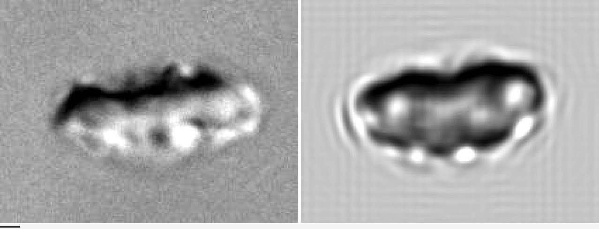
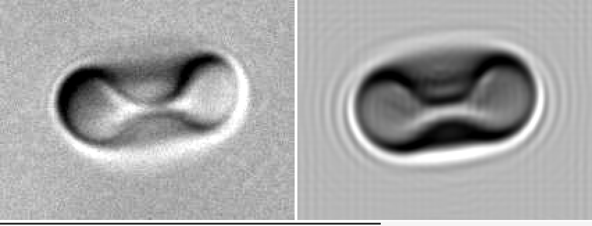
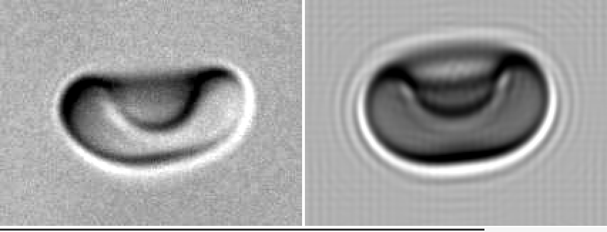

Red Blood Cells Dynamics and Microscopy
August 03, 2026
A few months after I started my PhD, I was part of a team trying to model how red blood cells (RBCs) flow through a microfluidic device. These devices are prime candidates for detecting circulating tumor cells, extremely rare cells that signal cancer metastasis, terribly difficult to catch among the trillions of red blood cells around them. To optimize these devices, we first needed a numerical model that can reproduce the correct physics.
One day, we were comparing two videos, one from a real experiment, and one from our simulations. The trajectories were different, meaning the simulations were wrong. In the simulations, the fluid was modeled with a particle method called dissipative particle dynamics (DPD), and we had a coarse-grained model for the membrane dynamics. At this point, we were not sure whether the mismatch came from the fluid or from the membrane surface model. To rule out the fluid part, I was tasked with writing a boundary-integral method (BIM) code, a trusted method for solving Stokes flows, to compare with the DPD method. I never got to finish properly since we discovered that increasing the DPD method resolution fixed that part.
Recently I made simulations of sedimenting particles in a viscous flow, where a cloud of small particles transformed into a torus before breaking up. This relies on the same principles for solving the Stokes equations, and it made me want to finally implement the boundary-integral method for a red blood cell. I decided to extend my solver to handle the complex membrane dynamics of RBCs, based on my previous research, and combine them with the fluid solver I implemented.
In particular, I have seen several experimental videos of these cells, none of them looking like the visualizations of my "perfect" cells produced numerically. Can we produce similar pictures, with the microscopic artifacts?
Let's first make a few simulations to obtain RBC shapes observed in experiments.
From membrane energies to the SDE sequence
Red blood cells are roughly two things: a membrane, enclosing a cytosol, containing the hemoglobin necessary to transport oxygen efficiently. The cytosol can be modeled as a viscous fluid about 5 times more viscous than the plasma. The membrane is more complicated: it is composed of a cytoskeleton and a lipid bilayer. The former is mainly responsible for shear elasticity, while the latter contributes to bending resistance, area conservation, membrane viscosity, and area-difference elasticity, depending on the surrounding chemical conditions. All these terms can be modeled mathematically on a single surface, and discretized onto a triangle mesh. I spare all the math and energy functionals, but it's described in detail in my previous research 1 2, and has been discretized initially in some of my colleague's work 3 and implemented in Mirheo 4. I show a few contributions below.
The energies are relatively simple to implement, and have analytical solutions on spheres.
Forces are derivatives of these energies with respect to positions,
much more involved, but validated against finite differences of the energy.
I also created functions to compute the Hessian of the energies, allowing to compute equilibrium shapes (minimal energy) faster thanks to Newton's method.
This was of course all facilitated by LLMs (I mainly used Opus 5.8 from Claude Code), although I gave tight directives so that the design remained under control, performance stayed reasonable, and I adopted a test-driven development approach.
After a bit of back and forth with my agent, tweaking, and parameter tuning, I could reproduce the famous SDE sequence (stomatocyte-discocyte-echinocyte), a sequence of shapes that RBCs take due to a change in the chemical environment, causing an imbalance between the two layers of the lipid bilayer:
Fischer 5 reproduced this sequence experimentally (EDS, reversed!) by changing the albumin concentration. I remember being fascinated by how much the cells deform under this chemical change:
This is a microscopic view, very different from the crisp idealized surfaces I showed before. How do they compare? In an ideal world, we would reconstruct the surface from the video. This is far from easy. Instead, let's do the reverse: take our perfect surfaces and model the microscopy.
Microscopy model
The above video uses differential interference contrast (DIC) microscopy. This technique is designed to visualize small, transparent objects that are not visible with conventional microscopy. It relies on the optical path length (OPL) accumulated by light through the sample. More precisely, a system of prisms decomposes the light source into two beams, separated by a small distance ; these two beams may thus have a different OPL, due to the shape and refractive index of the sample. The two beams are then recombined and the resulting intensity is recorded by the camera. This intensity depends on the phase difference between the two beams, and thus the image is related to the difference in OPL between them, which for a small approximates the gradient of the OPL along the shear direction.
The math is relatively simple. First, we can represent the electric field (light) as a wave, with complex numbers: where is the angular frequency, the wavelength and is the speed of light in vacuum.
In DIC the key quantity is , as it contains the phase and amplitude of the light beam. In particular, the phase changes when the beam goes through a medium with refractive index : where is the vacuum wavenumber and is the physical distance. This tells us that the phase "accumulates" at a rate per distance. This is related to the OPL Thus, if is the refractive index inside the sample and that of the medium, the OPL can be written as where is the object thickness and . The phase shift is thus proportional to the object thickness, carrying image contrast. On top of that, light gets absorbed as it goes through the medium. In that case the amplitude decreases exponentially with distance, at a rate depending on the medium. This rate can be included as the imaginary part of the refractive index . Note that absorption alone would not give us as sharp a view as the DIC microscopy - nevertheless it is easy to model and still contributes to the optics.
In reality, light follows the wave equation and doesn't go straight, due to diffraction. To account for this, we need to solve the Helmholtz equation through the sample: which we solve using the angular spectrum method and FFT.
Refraction (the term) does not commute with the diffraction operation. We solve this thanks to a second-order Strang splitting scheme over eight slabs (the thin-phase-object approximation would give a 17% error).
Finally, the light hitting the sample isn't an ideal plane wave. Instead, a real condenser produces a cone of plane waves coming from a spread of angles and from uncorrelated parts of the lamp. Thanks to this decorrelation, we can add their contributions only at the end by computing the sum of their intensities. This is called Abbe averaging.
We can now fit all the optics parameters (, , absorption, condenser NA, bias), view parameters (orientation, focus) and physical parameters (stage in the SDE sequence, RBC radius) to match the images in the video. Here are the results, after optimizing these parameters with CMA-ES 6:



Left images are from Fischer 5, and right ones are the simulated DIC of our computed SDE shapes. We can see the main characteristics of the cells, and we seem to capture the most important physics. This is encouraging: we have a model that reproduces experimental data!
We still haven't seen any hydrodynamics though. Let's study an RBC in a shear flow.
Red blood cell in a shear flow
In a shear flow, red blood cells exhibit an impressive range of dynamics. One of the most famous type is the so-called tank-treading, where the membranes rotates around a steady shape, like treads on a tank. An example is simulated below:
The model used here includes, in addition to the forces we have mentioned above, a Boussinesqu-Scriven viscosity model, discretized on the triangle mesh and solved implicitly to accomodate the boundary integral method (BIM) Stokes solver. Furthermore, we model the viscosity contrast between the cytosol and the solvent, appearing as a stresslet term in the BIM solver. Again, I spare the math here, but this results in a linear system of equation that we solve with conjugate gradient.
References
-
Amoudruz, L., 2022. Simulations and control of artificial microswimmers in blood. PhD thesis, ETH Zurich. DOI ↩
-
Amoudruz, L., Economides, A., Arampatzis, G. and Koumoutsakos, P., 2023. The stress-free state of human erythrocytes: Data-driven inference of a transferable RBC model. Biophysical Journal, 122(8), pp.1517-1525. DOI · PDF ↩
-
Bian, X., Litvinov, S. and Koumoutsakos, P., 2020. Bending models of lipid bilayer membranes: Spontaneous curvature and area-difference elasticity. Computer Methods in Applied Mechanics and Engineering, 359, p.112758. DOI ↩
-
Alexeev, D., Amoudruz, L., Litvinov, S. and Koumoutsakos, P., 2020. Mirheo: High-performance mesoscale simulations for microfluidics. Computer Physics Communications, 254, p.107298. DOI · PDF ↩
-
Fischer, T.M., 2022. The Shape of Human Red Blood Cells Suspended in Autologous Plasma and Serum. Cells, 11(12), p.1941. DOI ↩↩
-
Hansen, N. and Ostermeier, A., 2001. Completely derandomized self-adaptation in evolution strategies. Evolutionary Computation, 9(2), pp.159-195. DOI ↩